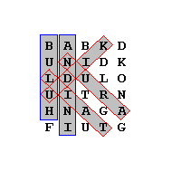

| Nama Program: | pjj0214.PAS / C / CPP |
| Batas Run-time: | 1 detik / test-case |
| Batas Memori: | 16 MB |
| Nama Berkas Masukan: | Standard input (keyboard) |
| Nama Berkas Keluaran: | Standard output (layar) |
Suatu permainan iseng-iseng asah otak berikut mungkin pernah anda temukan. Diberikan matriks yang setiap selnya berisikan satu huruf kapital. Pada matriks terdapat sejumlah kata yang karakter-karakternya tersusun secara
Buatlah program yang diberikan suatu matriks dan sejumlah kata, menentukan kata-kata mana saja yang ada di dalam matriks tersebut.
Baris pertama berisi dua buah bilangan bulat yang merupakan banyak baris dan kolom matriks, R dan C (2 ≤ R, C ≤ 100). R baris selanjutnya berisi matriks masukan. Pada setiap baris, huruf-hurus kapital dipisahkan dengan sebuah spasi.
Baris berikutnya berisi sebuah bilangan bulat N (1 ≤ N ≤ 100) yang menyatakan banyak kata yang ingin dicari. N baris berikutnya berisi kata-kata yang ingin dicari.
Keluarkan satu baris keluaran untuk setiap dari N kata yang dicari, sesuai urutan. Pada setiap baris keluaran, keluarkan kata yang dicari, lalu karakter 'Y' jika kata yang dimaksud ditemukan dalam matriks, dan 'T' jika tidak ditemukan.
6 5 B A B K D U N I D K L D U L O U I T R N H N A G A F I U T G 6 BULUH UDIK HITAM ANDINI LIAT ARUN
BULUH Y UDIK Y HITAM T ANDINI Y LIAT Y ARUN Y
Diagram untuk kasus di atas:
